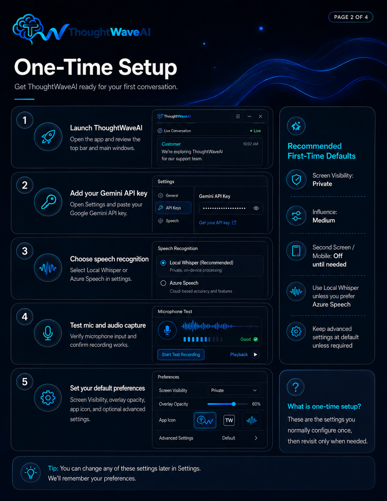
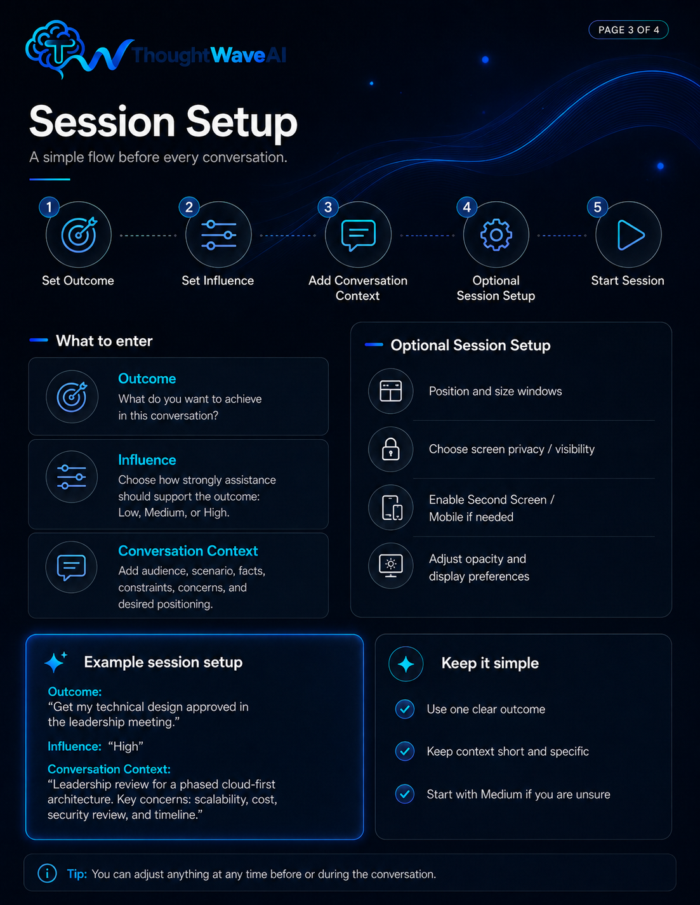
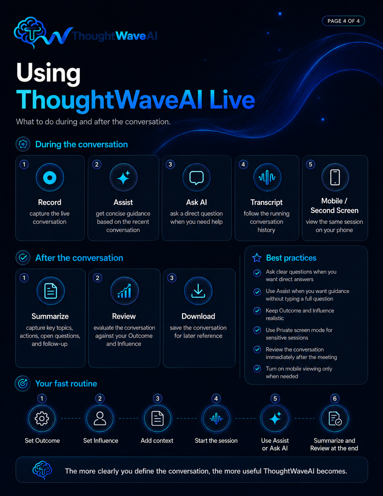

Launch ThoughtWaveAI
Open the app and review the top bar and main windows.
Getting Started
Set up ThoughtWaveAI once, then use a simple session routine to align assistance with what you want to accomplish.
Section A
Get ThoughtWaveAI ready for your first conversation.
Open the app and review the top bar and main windows.
Open Settings and enter your Google Gemini API key.
Use Local Whisper or Azure Speech depending on your setup.
Verify microphone input and confirm recording and capture work as expected.
Choose Screen Visibility, opacity, app icon, and optional advanced settings.

Section B
Prepare ThoughtWaveAI for the specific conversation ahead.
What do you want to achieve in this conversation?
Choose how strongly assistance should support the outcome: Low, Medium, or High.
Add audience, scenario, facts, constraints, concerns, and desired positioning.
Position windows, choose visibility and opacity, enable Second Screen, or adjust capture preferences.
Begin when your essential session details are ready.

Section C
Keep session preparation short, concrete, and tied to the decision or result you need.
Get approval for my proposed architecture.
High
Leadership review. Main concerns are scalability, cost, and implementation risk. I want to advocate for a phased rollout.
Move the prospect to the next step in the sales process.
High
The prospect is interested but concerned about pricing, implementation effort, and timing. I want to understand the objection, address it clearly, and secure agreement for a follow-up demo or proposal review.
Reach a favorable outcome while representing my position clearly and credibly.
Medium
High-stakes discussion where I need to respond thoughtfully, address objections, strengthen my positioning, and avoid overstating anything that is not supported.
Section D
Reach for the control that matches what you need in the moment.
Capture the live conversation.
Get contextual guidance.
Ask something directly.
Follow the conversation.
Use another screen when useful.

Section E
Close the loop while the discussion is still fresh.
Capture key topics, actions, open questions, and follow-up.
Evaluate progress against Outcome and Influence.
Save the session for later reference.